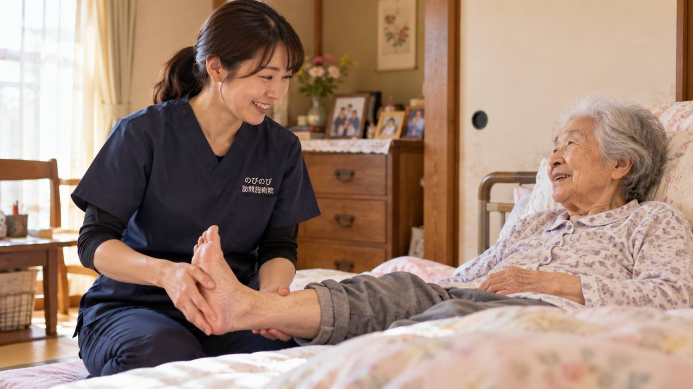

朝、起きて最初の一歩でかかとが痛む、歩き出すと足の裏が突っ張る。足の裏に張る腱膜への負担の積み重ねで起こることが多い症状です。診断と治療方針は整形外科などの医師が決めますが、痛みをかばって固くなったふくらはぎや足裏、足首まわりをゆるめる部分は、ご自宅にうかがう鍼灸・マッサージでお手伝いできます。
この記事のポイント
診断と治療方針は整形外科などの医師が決めます。鍼灸がお手伝いできるのは、痛みをかばって固くなったふくらはぎや足裏、足首まわりの筋肉をゆるめ、めぐりを助けること。長引く痛みについて医師が鍼やお灸を必要と認め、通院がむずかしい状態なら、はり・きゅうの医療保険の対象になる場合があります。かかとが赤く腫れて熱をもつ、体重をかけられないほど痛いといったときは、まず整形外科を受診してください。
足裏やかかとの痛みは、なぜ起こるのか
足の裏には、かかとから足指の付け根まで、腱膜という膜が扇のように張っています。この腱膜は歩くたびに伸び縮みして衝撃を受け止めますが、負担が積み重なると付け根に小さな傷みや炎症が起こり、痛みが出ます。これが足底腱膜炎です。とくに朝の一歩目や、座っていて立ち上がった直後に強く痛み、歩いているうちに少し和らぐことが多いのが特徴です。立ち仕事や歩きすぎ、足に合わない靴、加齢による腱膜の硬さなどが重なって起こります。爪のトラブルが歩きにくさにつながっている場合は、「巻き爪・肥厚した爪など足のトラブルに」もあわせてどうぞ。
診断と治療の方針は、医師のもとで
かかとの痛みには、足底腱膜炎のほかにも、骨のとげ（骨棘）や疲労骨折、神経の圧迫などが隠れていることがあります。原因を見きわめるのは整形外科などの医師の役割です。多くは安静やストレッチ、靴の見直し、インソールなどで様子をみますが、まずは受診して、ご自身の足の状態を知っておくと安心です。鍼灸はその治療と並行して、痛みで固くなった足まわりをゆるめるお手伝いをします。
すぐに医療機関へ相談したほうがよいとき
かかとが赤く腫れて熱をもっている、じっとしていてもズキズキ痛む、足の裏や指にしびれが広がる、転んだあとから急に痛みだした、体重をかけられないほど痛い。こうしたときは、骨折や神経のトラブル、感染などが隠れていることがあります。早めに整形外科を受診してください。糖尿病などで足の感覚が鈍い方は、小さな傷が悪化しやすいため、とくに注意が必要です。
かばう歩き方が、新たな痛みを呼ぶ
足裏が痛むと、無意識にそこをかばって歩くようになります。すると、ふくらはぎや足首、ひざ、腰にまで余計な負担がかかり、別の場所の痛みやこわばりを招くことがあります。ふくらはぎが固いと足裏の腱膜も引っ張られやすく、痛みが長引く一因になります。足だけでなく、脚全体のめぐりと柔らかさを整えていくことが助けになります。
鍼灸でできるのは、足まわりをゆるめること
訪問鍼灸マッサージがお手伝いできるのは、痛みのもとを取り除くことではなく、こわばったふくらはぎや足裏、足首まわりをゆるめ、めぐりを助けることです。はりやお灸でこわばりがほどけると、歩き出しの一歩が楽になったと話される方もいます。感じ方には個人差があります。鍼灸に加えて、足首をゆっくり動かす機能訓練も行い、その日の痛みに合わせて刺激を加減します。
ご家庭で、力になれること
入浴などで足を温めてから、ふくらはぎや足裏をやさしく伸ばすと、腱膜の張りがやわらぎやすくなります。朝起きてすぐ歩く前に、足首を軽く回したり、タオルを使って足裏を伸ばしたりするのもおすすめです。かかとにクッション性のある靴やインソールを選ぶことも、負担を減らす助けになります。どこまで動かしてよいかは、痛みの程度で変わるので、施術のなかでも一緒に確かめていきます。
靴や足もとの見直しも、痛みを減らす鍵
足底腱膜炎は、足に合わない靴や、かかとのすり減った靴が引き金になることもよくあります。かかとがしっかり支えられ、クッション性のある靴を選ぶだけでも、足裏への衝撃はずいぶん違ってきます。すでにインソール（中敷き）を使っている方は、それが今の足の状態に合っているかを一度見直してみるとよいでしょう。素足で固い床を長く歩かない、家の中でもかかとを守るスリッパをはく、といった小さな工夫も、日々の負担を減らす助けになります。施術のなかで気づいた点があれば、こうした足もとの工夫もあわせてお伝えします。
うかがっていて聞くこと
足全体をほぐすようになってから、以前より歩きやすくなったと話される方がいます。歩ける距離が少しずつ延びたと教えてくださる方もいます。一方で、変わらないとおっしゃる方もいて、感じ方には個人差があります。痛みのもとが消えるわけではありませんが、動きやすさを支え、外に出る気持ちを後押しできればと考えます。
気になる費用のこと
足やかかとの慢性的な痛みについて、医師が鍼やお灸を必要と認め、通院がむずかしい状態であれば、はり・きゅうの医療保険が使える場合があります。1回の総額は3,950円で、自己負担は負担割合に応じた分だけです。1割の方でおよそ395円が目安です。金額はあらかじめ決まっているので、見通しを立てやすいと思います。対応エリア内であれば出張費は別にかからず、集金は月ごとにまとめて行い、その月の施術の内訳がわかる明細をお渡しします。ほかの負担割合の方の金額は「料金の記事」をご覧ください。
受けはじめるまでの流れ
はじめに、お電話などで痛みの出方や歩くときのつらさ、通院の様子、かかりつけの医療機関をお聞かせください。医師の診断を土台に、足まわりへ鍼灸でお手伝いできることをご説明します。痛みの強い時期は刺激を控えめにして始めます。同意書をそろえる段取りも当院が進めますので、気になることは遠慮なくお尋ねください。先生に切り出しにくい方は「同意書を書いてもらえないとき」をご覧ください。
よくある質問
足底腱膜炎は鍼灸で治りますか？
痛みのもとを取り除くものではありません。鍼灸は、こわばった足まわりをゆるめ、歩きやすさを支える役割です。診断と治療方針は医師にご相談ください。
かかとの痛みでも保険で受けられますか？
医師が鍼やお灸を必要と認め、通院がむずかしい状態であれば、慢性的な足の痛みは対象になる場合があります。まずは整形外科などで診てもらいましょう。
朝の一歩目がとくに痛みます
起き抜けは腱膜が固まりやすい時間帯です。歩く前に足首や足裏を軽く伸ばすと楽なことがあります。施術でも足まわりの柔らかさを整えていきます。
足以外もみてもらえますか？
足をかばって負担のかかりやすいふくらはぎ・ひざ・腰も含めて、脚全体のバランスを見ながら施術します。
費用は1回いくらですか？
1回の総額は3,950円で、自己負担は負担割合に応じた分だけです。1割の方でおよそ395円が目安になります。対応エリア内であれば出張費は別にかかりません。
どのあたりまで来てもらえますか？
豊中・吹田・茨木・箕面・摂津・池田、尼崎・伊丹、大阪市の淀川区・東淀川区・都島区・北区・旭区にうかがっています。